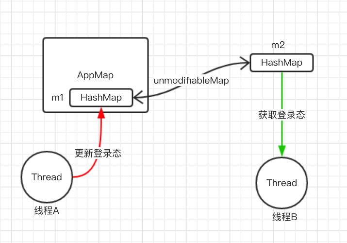
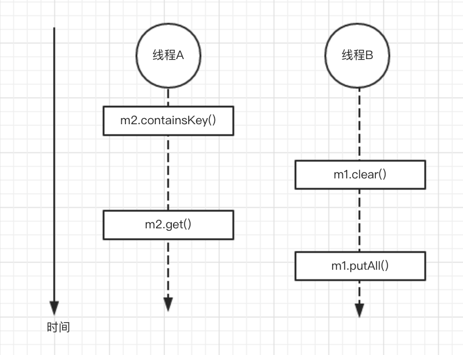

HashMap并非线程安全的。多线程中使用HashMap时，应当注意数据同步问题。本文记录并分析了我在实际项目中遇到的一个关于HashMap数据不同步问题。
问题描述
AppMap用于保存应用的登录态。
- 请求后台接口时从AppMap读取登录态
- 登录、退出登录、以及刷新微信access token时会更新登录态
AppMap是单例, 它的内部使用HashMap保存数据。代码如下：
1
2
3
4
5
6
7
8
9
10
11
12
13
14
15
16
17
18
19
20
21
22
23
|
public class AppMap {
private static AppMap instance = new AppMap();
public static AppMap getInstance() {
return instance;
}
private Map<String, String> m1 = new HashMap<>();
public Map<String, String> snapshot() {
return Collections.unmodifiableMap(m1);
}
public void update(Map<String, String> map) {
m1.clear();
m1.putAll(map);
}
}
HashMap m2 = appMap.snapshot();
|
update()方法用于更新登录态，更新登录态是写操作。AppMap.update()直接更改其内部的Mapsnapshot()方法用于获取登录态，获取登录态是读操作。为避免调用方意外修改登录态，AppMap.snapshot()返回了一个不可修改的Map
由于某些历史原因，应用运行时可能出现这样一个多线程并发访问HashMap的场景：

线程A更新登录态，它向m1中写入数据；同时，线程B获取登录态以发送网络请求，它从m2中读取数据。
线程B获取登录态发送网络请求的伪代码如下：
1
2
3
4
5
6
7
8
| void net() {
if (!m2.containsKey("someKey")) {
return;
}
String someValue = m2.get("someKey");
byte[] data = someValue.getBytes();
....
}
|
很不幸，byte[] data = someValue.getBytes()这行代码抛出了NullPointerException，提示someValue为null。怎么可能？someKey明明存在啊，却拿不到someValue？
m2是通过Collections.unmodifiableMap方法得到的，它是一个不可变的map。m2本质上是共享m1的数据。代码示例如下：
1
2
3
4
5
6
7
8
9
10
11
12
13
14
| Map<String, String> original = new HashMap<>();
original.put("a", "A");
Map<String, String> unmodifiable = Collections.unmodifiableMap(original);
int oldSize = unmodifiable.size();
original.put("b", "B");
int newSize = unmodifiable.size();
System.out.println("old size=" + oldSize + ", new size=" + newSize);
|
稍加分析就能明白，上图中多线程并发访问HashMap，读写操作序列是不确定的。按以下中这种读写序列执行时，线程A中会出现”someKey”存在，但拿不到”someValue”的奇怪现象，最终引起NullPointerException。

解决方法
如何避免线程B出现NullPointerException呢？修复方案很简单。
1
2
3
4
5
6
7
8
| void net() {
String someValue = m2.get("someKey");
if (someValue == null) {
return;
}
byte[] data = someValue.getBytes();
....
}
|
修改后的代码的确避免了NPE。这里给出测试代码，npe()是修复前的代码，noNpe()是修复后的代码。
1
2
3
4
5
6
7
8
9
10
11
12
13
14
15
16
17
18
19
20
21
22
23
24
25
26
27
28
29
30
31
32
33
34
35
36
37
38
39
40
41
42
43
44
45
46
47
48
49
50
51
52
53
54
55
56
57
58
59
| public class Demo {
public static void main(String[] args) {
Map<String, String> map = new HashMap<>();
map.put("uid", "cm");
AppMap appMap = AppMap.getInstance();
appMap.update(map);
Thread threadA = new Thread(new Runnable() {
@Override
public void run() {
while (true) {
try {
Map<String, String> map = new HashMap<>();
map.put("uid", "cm" + new Random().nextInt());
appMap.update(map);
TimeUnit.MILLISECONDS.sleep(50);
} catch (Exception e) {
e.printStackTrace();
}
}
}
});
Thread threadB = new Thread(new Runnable() {
@Override
public void run() {
long now = System.currentTimeMillis();
int loop = 0;
try {
while (true) {
loop++;
Map<String, String> unmodifiable = appMap.snapshot();
npe(unmodifiable);
}
} catch (NullPointerException e) {
System.err.println("NPE occurred after " + (System.currentTimeMillis() - now) + "ms, " + loop + " loops");
}
}
});
threadA.start();
threadB.start();
}
private static void npe(Map<String, String> unmodifiable) {
if (unmodifiable.containsKey("uid")) {
String value = unmodifiable.get("uid");
byte[] data = value.getBytes();
}
}
private static void noNpe(Map<String, String> unmodifiable) {
String value = unmodifiable.get("uid");
if (value != null) {
byte[] data = value.getBytes();
}
}
}
|
执行修复前后的代码发现，npe()会输出如下NPE occurred after 327ms, 4415532 loops(具体数据可能有所不同)，而noNpe()不会输出该日志。证有修复方法是有效的。
参考
Concurrency and HashMap
Infinite loop in HashMap | JavaByPatel
java - Using HashMap in multithreaded environment - Stack Overflow